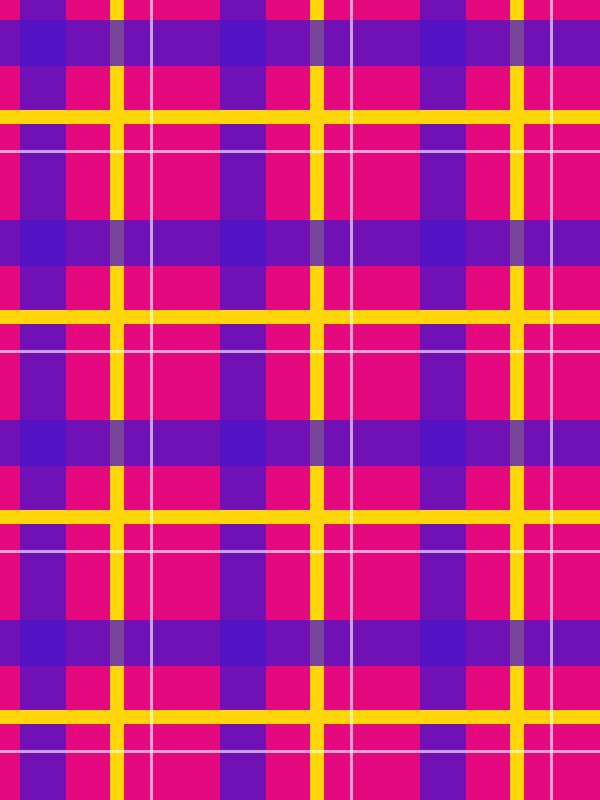
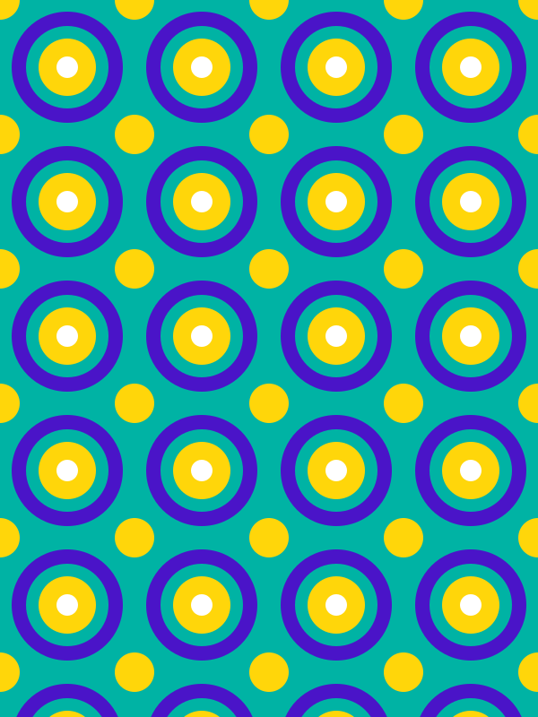

Timeless. Unique. Yours.
Custom wears for every gender and age, made from your measurements in the fabric you choose. Based in Scotland, delivering across the UK.Order a pieceBook a fitting



Explore
Your fabric, your way
Bring your own fabric, or we source it for you and you approve it before we cut.